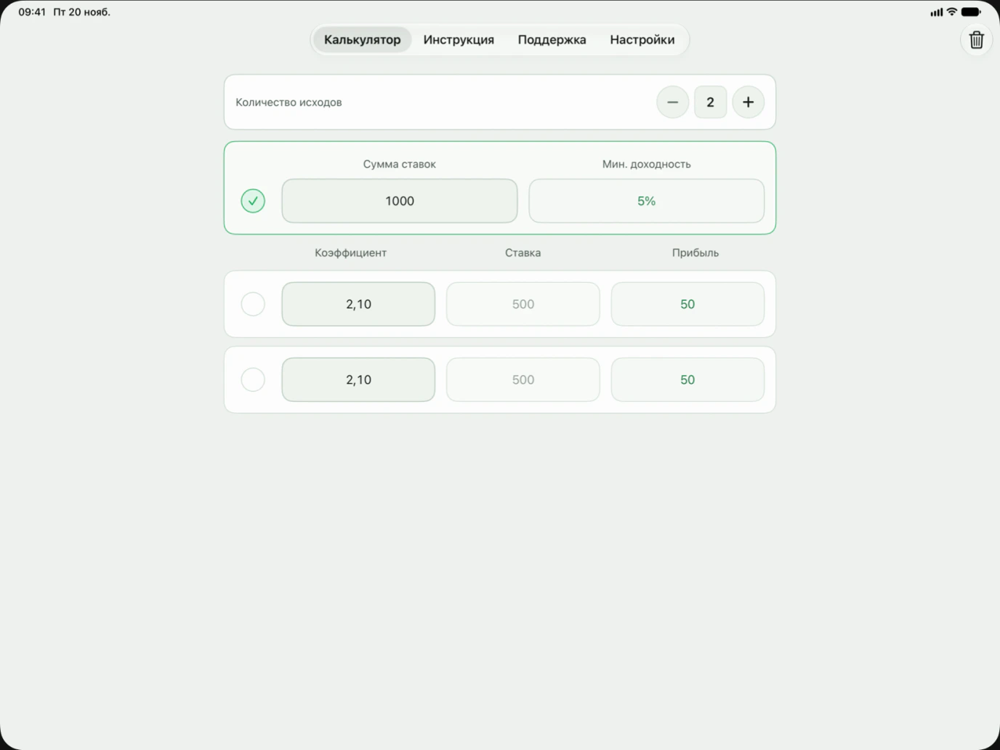

SurebetStake Calculator
Введите коэффициенты и общую сумму. Калькулятор покажет, сколько поставить на каждый исход и какой получится результат.


Как прочитать расчёт
Допустим, есть два исхода с коэффициентами 2,10 и общая сумма 1 000. Калькулятор распределит её поровну.
При ставке 500 выигравший исход принесёт выплату 1 050. Вычитаем общую сумму ставок 1 000 и получаем прибыль 50 — это доходность 5%.
Что можно посчитать
Распределить общую сумму
Укажите коэффициенты для 2–20 исходов и введите общую сумму. Калькулятор покажет ставку и результат для каждого исхода.
Зафиксировать одну ставку
Введите сумму ставки на один исход. Калькулятор покажет ставки на остальные исходы и общую сумму, которая понадобится.
Сравнить свои ставки
Введите ставки вручную и сравните прибыль или убыток для каждого возможного исхода.
Поддерживаемые устройства
iPhone с iOS 16 или новее
iPad с iPadOS 16 или новее